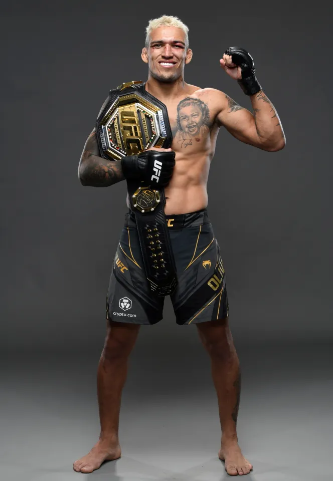

Charles Oliveira - Do Bronx
Charles Oliveira este un luptător brazilian de MMA și fost campion UFC la categoria lightweight.
Este cunoscut pentru abilitățile sale de Brazilian Jiu-Jitsu și pentru numărul mare de victorii prin submission.
Oliveira folosește tehnici precum guillotine choke, rear naked choke și armbar. Este unul dintre cei mai periculoși luptători la sol din UFC.
